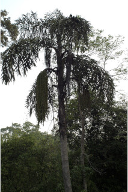
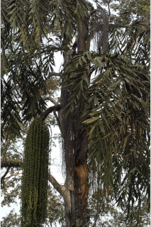
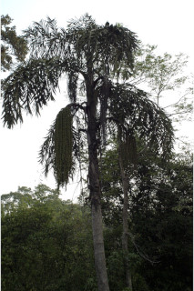
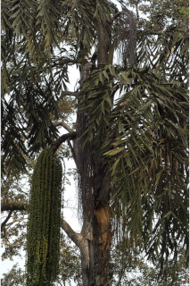

Tamil: Konda panei, Koonthal panai, Kuntha panai, Iram panai, Thippili panei.
Malayalam: Ana pana, Chunda pana, Chuntappana, Cuntappana, Erimpana, Iram pana, Kala pana, Konda pana, Kundapanai, Olatti, Panamkula, Schundapana, Shundrapana, Vainava.
Kannada: Bagani, Baini, Bayni, Kondapana.
Vernacular names:
Images
 




Swipe to see more >>